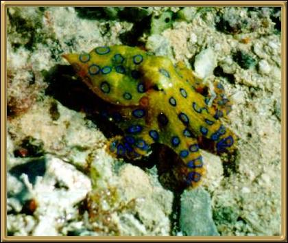

Photographer: Unknown
I know he doesn't really belong here, but... ah well. The Blue-ringed Octopus is an attractive little creature that lives in rockpools on the eastern seaboard of Australia. When it's threatened, it 'pulses' luminous bright blue rings on its body. It won't bite unless it is handled but the bite is not painful, although it is toxic.
The symptoms of being bitten include are
a numb feeling of the face and tongue; progressive weakness in the legs and body; eventual
collapse; respiratory arrest. So it's really quite important to look but don't
touch!